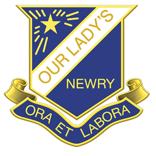

28 of 28 departments shown
No departments match those filters.
Open the showcase on a phone
Scan this with any phone camera to open the hub. The same URL works from any school device on C2K.
https://dgaj-g.github.io/ols-digital-showcase/

Twenty-eight small interactive activities — one per department — built for the May 2026 staff training session at Our Lady's Grammar School, Newry.
28 of 28 departments shown
Scan this with any phone camera to open the hub. The same URL works from any school device on C2K.
https://dgaj-g.github.io/ols-digital-showcase/